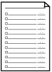

You can print a template form such as lined paper, graph paper, or checklist, etc. on A4, B5, or Letter-sized plain paper.
Printable template forms
The following templates are available:
-
Notebook paper
You can select three line spacing formats.
Setting on the LCD:
-
Notebook paper 1: 8 mm spacing
-
Notebook paper 2: 7 mm spacing
-
Notebook paper 3: 6 mm spacing
 Note
Note-
You cannot print Notebook paper on B5 sized paper.
-
-
Graph paper
You can select two square sizes.
Setting on the LCD:
-
Graph paper 1: Graph 5 mm
-
Graph paper 2: Graph 3 mm
Note-
You cannot print Graph paper on B5 sized paper.
-
-
Checklist
You can print a notepad with checkboxes.
Setting on the LCD:
Checklist
-
Staff paper
You can print staff paper with 10 or 12 staves.
Setting on the LCD:
-
Staff paper 1: Staff paper 10 staves
-
Staff paper 2: Staff paper 12 staves
-
-
Handwriting paper
You can print handwriting paper.
Setting on the LCD:
Handwriting paper
-
Weekly schedule
You can print a weekly schedule form.
Setting on the LCD:
Weekly schedule
-
Monthly schedule
You can print a monthly schedule form.
Setting on the LCD:
Monthly schedule
Printing template forms
Print template form following the procedure below.
-
Make sure that the machine is turned on.
-
Load A4, B5, or Letter-sized plain paper in the Cassette.
-
Press the Setup button.
-
Select Template print, then press the OK button.
-
Use the


 button to select the template you want to print, then press the OK button.
button to select the template you want to print, then press the OK button. -
Specify the settings of page size and 2-sided printing, and use the + or - button to specify the number of copies.
Use the
button to select the setting item and the button to change the settings.Note-
Depending on the form, some setting of page size cannot be specified. If it is selected, Error details is displayed on the LCD. In this case, press the left Function button to confirm the message, then change the setting.
-
-
Start printing.
Press the Color button for printing the following forms.
Notebook paper 1/Notebook paper 2/Notebook paper 3/Graph paper 1/Graph paper 2/Handwriting paper
Press the Black button for printing the following forms.
Checklist/Staff paper 1/Staff paper 2/Weekly schedule/Monthly schedule